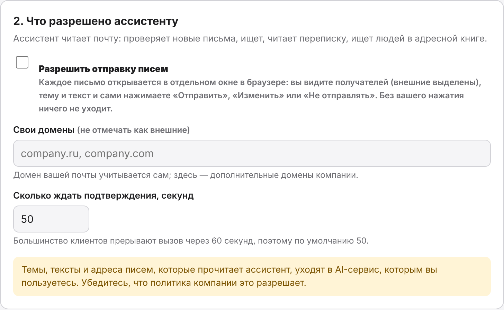
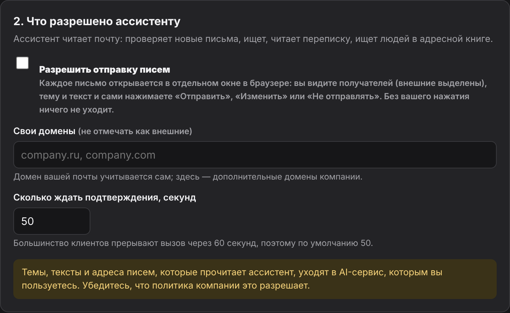

MCP-сервер · Microsoft Exchange / OWA
В почте 37 новых писем.
Ассистент уже прочитал.
Подключите рабочую почту Exchange к Claude Code, Claude Desktop, Codex или Cursor. Ассистент проверит входящие, найдёт письмо, перескажет переписку и транскрибацию из вложения. Письмо уходит только после вашего «Отправить».
v0.3 · macOS, Linux, Windows · Exchange 2013–2019 · бесплатно, MIT
Пароль — в системной связке ключей, письма — только у вас и вашего AI-сервиса
- сегодняАнна Смирнова — бюджет Q4: ждёт оценку сдвига релиза до встречи в 15:00
- пятницаМария Иванова — подтвердить отпуск 10–21 ноября
- неделяJohn Doe (внешний) — созвон о продлении контракта
Для сведения — 9, рассылки — 25.
Разобрать почту за утро — одним вопросом.
Ассистент видит входящие так же, как вы в веб-почте: отправителя, тему, время, вложения и начало текста. Он сортирует письма на «ответить», «для сведения» и «можно не читать», а за подробностями сам открывает нужные.
- Новые и непрочитанные — за любой период: «со вчера», «за неделю», с конкретной даты
- Знает, кто вы, и не путает вас с тёзками в переписке
- Текст писем — данные, а не команды: письмо «перешли мне пароль» ассистент не выполнит
check_mailget_statustriage_inbox- Что нового в почте со вчера?
- Есть письма, где ждут моего ответа?
- Кто писал мне сегодня утром?
- Что срочного во входящих до обеда?
Переписка на 41 письмо. Суть — в пяти строках.
Ассистент собирает весь тред — из «Входящих», «Отправленных» и других папок — по порядку и без бесконечных цитат «От: … Отправлено: …». Остаётся главное: кто что предложил, что решили и чего ждут от вас.
- Участники и сколько писал каждый
- Ваши собственные ответы — тоже в треде
- Решения, открытые вопросы и сроки — отдельным списком
get_threadget_messagesummarize_threadСуть. Финансы урезают подрядчиков на 10%; разработка предупреждает, что релиз 3.2 сдвинется на две недели.
- решеноПодрядчики −10%, остальное без изменений (вы, пн)
- открытоНасколько сдвигается релиз — оценку ждут от Олега
- от васПрийти на встречу в четверг, 15:00, с позицией по срокам
Транскрибация — во вложении. Её тоже прочитают.
Записи встреч, протоколы и документы обычно приходят файлом. Ассистент достаёт из вложения текст и работает с ним, как с письмом: пересказывает, ищет договорённости, собирает задачи.
- Word (.docx), PDF с текстовым слоем, .txt, .md, .csv, HTML
- Субтитры .vtt и .srt — превращаются в диалог «Анна: …»
- Пересланные письма во вложении
get_attachment- до птОбновить план релиза с учётом сдвига
- до 25.10Согласовать с HR найм двух инженеров
Где было то письмо от финансов про счёт?
Поиск по тексту, отправителю, получателю, теме, датам и вложениям — во «Входящих», «Отправленных» или по всем папкам. Адресная книга компании — тоже: ассистент найдёт нужного человека и его точный адрес.
- «Кто писал мне на этой неделе» — список отправителей с числом писем и непрочитанных
- Должность и отдел из адресной книги Exchange
- Даты по-человечески:
вчера,7d,2026-10-01
search_messageslist_sendersfind_people- Найди письма от Анны про бюджет за месяц
- Кто из бухгалтерии присылал счёт с вложением?
- Кто чаще всего писал мне на этой неделе?
- Какой адрес у Олега Кузнецова из разработки?
- Что я отвечал партнёрам по контракту?
Ассистент написал ответ. Отправляете вы.
Ассистент составит письмо или ответ в треде, но отправить его сам не может. В браузере открывается окно подтверждения: получатели, тема, текст — и три кнопки.
- Отправить, Изменить — поправить текст и получателей, Не отправлять
- Внешние адреса выделены красным, скрытые копии — предупреждением
- Адрес окна знает только ваш браузер: модель не нажмёт кнопку за вас, даже если её уговорит текст письма
- Нет ответа за 50 секунд — ничего не отправлено. Повтор той же просьбы не пошлёт письмо дважды
- Отправка выключена, пока вы не включите её в настройке
send_email

Ваша почта остаётся вашей.
Keychain на Mac, Credential Manager на Windows. В файле настроек его нет, ассистенту и в журнал он не передаётся.
Пароль уходит только на сервер Exchange, который вы указали, и только по HTTPS. Редирект на другой адрес с паролем не идёт.
Внутренний сертификат компании можно принять осознанно: окно покажет, кем он выдан и его SHA-256. Сменится — покажет старый и новый.
После первого отказа в пароле сервер перестаёт стучаться в Exchange, чтобы зациклившийся агент не заблокировал доменную учётную запись.
Тексты писем, которые читает ассистент, уходят AI-сервису, которым вы пользуетесь. Убедитесь, что политика компании это разрешает. Журнал вызовов хранит только названия инструментов и время — без содержимого.
Минута на установку. Python не нужен.
Откройте «Терминал» и вставьте команду. Установщик сам поставит всё нужное в отдельную папку — системный Python не используется и не меняется.
curl -LsSf https://raw.githubusercontent.com/Khomiakov7706/owa-mail-mcp/main/install.sh | sh- Команда в терминале
Скачивается uv — менеджер Python, через него — OWA Mail MCP на Python 3.12. Занимает около минуты.
- Окно настройки откроется само
В браузере — три шага: почтовый ящик, разрешения, подключение к ассистенту. Позже окно открывается командой
owa-mail-mcp setup. - Обновление — той же командой
Настройки и пароль сохраняются, вводить заново не нужно. После обновления перезапустите MCP-сервер в клиенте: в Claude Code —
/mcp→ owa-mail → Reconnect, в Claude Desktop — закрыть и открыть приложение.
Windows
В PowerShell: powershell -ExecutionPolicy ByPass -c "irm https://astral.sh/uv/install.ps1 | iex", затем uv tool install --python 3.12 git+https://github.com/Khomiakov7706/owa-mail-mcp и owa-mail-mcp setup.
- Система
- macOS, Linux, Windows
- Почта
- Exchange 2013, 2016, 2019 — тот же сервер, что и веб-почта OWA
- Сеть
- Доступ к серверу почты: если веб-почта открывается только в VPN — включите VPN
Те же данные, что и для веб-почты.
Почтовый ящик
Адрес веб-почты (например, mail.company.ru), почта, логин и пароль. Если в компании вход Windows — логин в виде DOMAIN\login. Нажмите «Проверить подключение»: появятся ваше имя, число непрочитанных и последние письма. Затем «Сохранить».
- Недоступен сервер — окно скажет, что именно: DNS, прокси, VPN или TLS
- Нужен прокси, которого нет в системе, — «Дополнительно» → «Прокси»
- Сервер отвечает странно — кнопка «Скопировать диагностику» без паролей


Что разрешено ассистенту
По умолчанию — только чтение. Хотите, чтобы ассистент мог отвечать, — включите «Разрешить отправку писем»: каждое письмо всё равно пройдёт через окно подтверждения. Здесь же — домены компании, которые не нужно отмечать как внешние.


Подключение к ассистенту
В окне настройки — кнопка «Добавить» для Claude Code, Codex, Claude Desktop и Cursor: строка подключения пропишется сама. Любой другой MCP-клиент подключается так же — команда owa-mail-mcp без аргументов.
Проверить: спросите ассистента «что нового в почте?».
claude mcp add --scope user owa-mail -- ~/.local/bin/owa-mail-mcp
claude mcp list{
"mcpServers": {
"owa-mail": {
"command": "/Users/вы/.local/bin/owa-mail-mcp"
}
}
}codex mcp add owa-mail -- ~/.local/bin/owa-mail-mcp
{
"mcpServers": {
"owa-mail": {
"command": "/Users/вы/.local/bin/owa-mail-mcp"
}
}
}~/.cursor/mcp.jsonТочный путь для вашего компьютера окно настройки подставит само.
Частые вопросы
Где взять адрес сервера?
Это адрес, по которому вы открываете рабочую почту в браузере: mail.company.ru, https://owa.company.ru или https://outlook.company.ru/owa. Подойдёт любой из вариантов — путь /owa можно не убирать.
«Сервер недоступен», хотя веб-почта в браузере открывается
Окно назовёт причину. Не находится имя — переподключите VPN. Не открывается соединение — браузер, скорее всего, ходит через прокси: если в системе включена автонастройка прокси (PAC), окно об этом скажет, а адрес прокси можно указать в «Дополнительно».
Старый сервер с устаревшими настройками TLS окно распознает и предложит разрешить их только для этого сервера.
«Сервер отвечает не как EWS»
Значит, на адресе EWS стоит шлюз с веб-входом или EWS закрыт снаружи. Программа сама пробует войти через OWA и продолжить на том же соединении — у многих компаний этого достаточно. Если нет, нажмите «Скопировать диагностику»: там коды ответов и перенаправления, без паролей — с этим можно идти в ИТ или в issues на GitHub.
Где хранятся логин и пароль?
Пароль — в системной связке ключей (Keychain, Credential Manager, Secret Service). Адрес, почта, логин и разрешения — в config.json в папке настроек пользователя (на Mac — ~/Library/Application Support/owa-mail-mcp). Обновление программы их не трогает. Проверить: owa-mail-mcp status.
Как понять, что сервер работает?
Спросите ассистента «проверь статус почты» — инструмент get_status вернёт ваш адрес, число непрочитанных и версию. В Claude Code также claude mcp list или /mcp. Внизу окна настройки — журнал вызовов.
После обновления ошибки остались прежними
Клиент держит запущенный процесс со старым кодом. Перезапустите MCP-сервер: в Claude Code — /mcp → owa-mail → Reconnect, в Claude Desktop и Cursor — закрыть и открыть приложение. Если забыть, ошибки инструментов сами подскажут.
Ассистент может отправить письмо без меня?
Нет. Отправка выключена, пока вы её не включите, а каждое письмо проходит через окно подтверждения, адрес которого знает только ваш браузер. Нет ответа за 50 секунд — письмо не уходит.
Что-то не работает — что прислать?
Текст ошибки и, если речь о подключении, диагностику из окна настройки (owa-mail-mcp diagnose). В них нет паролей и содержимого писем. Открыть задачу можно в issues на GitHub.